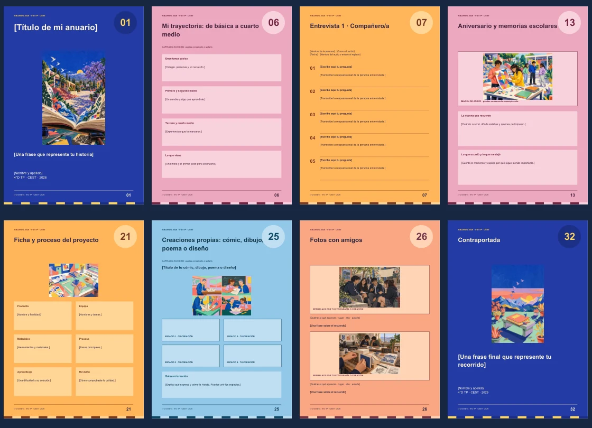

4°D TP · Lengua y Literatura + Gráfica · 2026
Tu historia,
Tu historia,
en un anuario.
Reúne las voces, recuerdos y creaciones que quieres conservar de tu paso por el colegio.
32 páginasresueltas y a colorDe portada a cierretextos e imágenes de ejemplo
El modelo es la referencia del proyecto. Sus personajes e ilustraciones son ficticios; cuenta tu propia historia. Las 32 páginas no son una extensión obligatoria.
Descargar el modelo en PDF
Tu espacio de trabajo
Continúa tu anuario
Ingresa con tu RUN para abrir tus textos, entrevistas y archivos. Si ya trabajaste en otro documento, continúa desde ese avance.

Un punto de partida
Empieza con la plantilla
El mismo recorrido del modelo, con títulos, fondos e ilustraciones y espacios para escribir tu información. Puedes cambiar colores, imágenes y distribución.
Cómo empezar en Illustrator
- Descarga el ZIP y extrae toda la carpeta.
- En Illustrator, usa Archivo → Abrir y abre Plantilla_Anuario_4D.pdf. Importa Todas las páginas y desmarca la opción de importarlas como vínculos.
- Guarda tu copia como Mi_anuario_Nombre_Apellido.ai. Con Texto (T), reemplaza las indicaciones entre corchetes.
El paquete incluye EMPIEZA_AQUI.html, páginas SVG y un generador para crear las 32 mesas con cuadros de texto y capas dentro de Illustrator. También se puede trabajar en Inkscape. Las páginas a elección se pueden combinar o quitar.
Las partes del modelo
De la portada a la última página
Abre una parte para ver sus ejemplos. Puedes combinar contenidos y organizarlos por años o por temas.
01Presentar tu libroIdentidad, primeras palabras e índice.
02Escuchar otras vocesCinco entrevistas y una versión editada.
Tres entrevistas a compañeros y dos a personas adultas de la comunidad educativa. Conserva sus palabras y los registros originales.
03Recordar la vida escolarTu curso, sus momentos y quienes acompañaron.
04Mostrar lo aprendidoProyectos, procesos y asignaturas.
05Elegir tus capítulos personalesOcho posibilidades a elección.
No tienes que hacerlas todas. Elige las que representen tu experiencia y aprovecha lo que ya escribiste.
06Mirar, cerrar y agradecerImágenes con sentido y palabras finales.
De tu avance al libro
Cómo continuar
Entrega final · 31 de octubre de 2026Tres copias impresas y cosidas
Revisar el modelo completo →Los avances recibidos en la revisión del 21 de septiembre se reconocen con nota 7,0. Las observaciones orientan la siguiente versión; la evaluación del libro final corresponde a otra etapa.